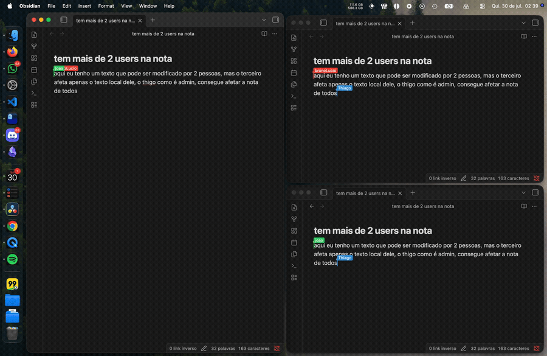

obsync
ObSync pairs an Obsidian plugin with a Node.js backend that you host yourself, allowing a collaborative vault. The note open in the editor is edited through Yjs over a WebSocket connection; everything else in the vault (files, folders, renames, binaries) is kept in sync over HTTP.
There are two roles:
adminaccounts publish their changes to the shared vault, so everyone connected sees them.useraccounts receive everything admins publish, but their own edits stay on their device and are never sent back.
The backend is the source of truth and enforces this on its own, so the guarantee does not depend on the plugin behaving correctly.
Demonstration

Contents
- How it works
- Getting started
- Reaching the backend from other devices
- Security
- Storage
- Troubleshooting
- Known issues
- API reference
How it works
Obsidian (plugin) Backend (Node.js)
admin edits active note ─── WSS /<note> (Yjs) ────▶ room: check role, apply, broadcast, save
user edits active note ──── (stays local)
any client ◀──────────────── WSS /<note> (Yjs) ──── room broadcasts admin edits
admin creates/renames file ─ HTTPS /api/sync/* ───▶ write to vault, broadcast event
any client ◀──────────────── WSS /system ────────── vault events
plugin start ◀────────────── HTTPS /initSync ────── whole vault as ZIP (skipped if unchanged)
There are two independent sync mechanisms:
| Mechanism | What it moves | Transport |
|---|---|---|
| Collaboration | The text of the note open in the editor, character by character | One WebSocket per open note, Yjs protocol |
| File sync | Vault structure and whole-file content of everything else, binaries included | HTTPS up, /system WebSocket events down |
Collaboration. Everyone with the same note open shares one room on the
backend, with one Y.Doc. Updates from non-admin connections are dropped and
logged as [Audit] Global Yjs update blocked. On a user client the editor's
document is never attached to the network: the plugin keeps a separate network
document that only receives. Each note is stored twice, as .yjs-state (the
binary Yjs state, needed so reconnecting clients do not duplicate text) and as
the readable .md.
File sync. When the plugin starts it downloads the vault as a ZIP, unless
its saved vault gene (a fingerprint of the vault in backend/data/gene.json)
still matches the server's, in which case the server answers 204. After
that, an admin's local creates, modifies, deletes and renames are sent over
HTTP, and the backend broadcasts them on /system. Files a user edited
locally are not overwritten: the plugin does a three-way merge with the last
server version, writing conflict markers when both sides changed the same
lines. Binaries cannot be merged, so the server version is saved next to the
local one as name (server version).ext.
Ordering. Operations from one client run in the order they were sent (one
queue per client id), and two operations on the same resource never overlap
(a shared KeyedLock). Messages inside a collaboration room are processed in
arrival order, only after the room has loaded its state from disk.
Getting started
These steps take a fresh clone to a signed-in plugin talking to your own backend on the same machine. Commands run from the repository root unless a step says otherwise.
Requirements
- Node.js 22.18 or newer. The backend runs
.tsfiles directly and uses the built-innode:sqlitemodule, so there is no backend build step. - Obsidian 1.13.1 or newer.
1. Install dependencies
npm install
The repository is an npm workspace, so this installs both backend and
plugin/obSync.
2. Configure the backend
Generate a signing secret:
openssl rand -base64 48
Create backend/.env:
OBSYNC_TOKEN_SECRET=
PORT=3000
OBSYNC_HOST=127.0.0.1
OBSYNC_REQUIRE_TLS=false
OBSYNC_TRUST_PROXY=false
This configuration is for local development only. Changing the secret signs everyone out.
3. Create the user database
npm run db:setup
db:setup refuses to touch an existing database, and the backend refuses to
start without one. It prints one line per seeded account with a random
temporary password:
[Database] Seed: initial accounts created.
[Database] foobar@gmail.com — temporary password (admin): Ax7f...
[Database] barfoo@gmail.com — temporary password (user): Qm2k...
Copy the admin password now. It is shown only once. The seed accounts are
defined in backend/users/UserDB.ts. To start over, stop the backend, delete
backend/data/users.sqlite* and run the command again.
4. Start the backend
npm run dev --workspace=backend
Leave it running. It prints Server running on http://127.0.0.1:3000 when it
is ready, and restarts when a backend file changes.
5. Build and install the plugin
The build type-checks before bundling, and the bundled Web Worker file it needs is generated by the bundler, so a fresh clone needs one bundle first:
cd plugin/obSync
node esbuild.config.mjs production
npm run build
Copy main.js, manifest.json and styles.css into
<your vault>/.obsidian/plugins/obsync/ and enable ObSync under
Settings → Community plugins.
6. Connect and sign in
Open Settings → ObSync, enter http://127.0.0.1:3000 as the
Backend server URL, save, and sign in with the admin account. Use
127.0.0.1 rather than localhost, which may resolve to IPv6 where nothing is
listening.
7. Change the temporary password
Go to Settings → ObSync → Account and set a real password. If you forget it, you have to re-create the user database.
8. Try it with two accounts
Sign in as the user seed account in a second vault (or a second device) and
open the same note in both. Text typed by the admin appears in both; text typed
by the user stays only on the user's side. New accounts are created under
Settings → ObSync → User management.
Installing from the Obsidian Community Plugins directory
Only the person running the backend needs steps 1 to 4. Everyone else installs ObSync from Settings → Community plugins → Browse and starts at step 6 with the backend URL and an account provided by that person.
Reaching the backend from other devices
Loopback and allowed addresses
A loopback address is one a machine uses to talk to itself. Traffic sent to it
never leaves the machine, so nobody on the network can read it, and plain HTTP
is safe there. ObSync recognizes exactly three loopback hosts: 127.0.0.1,
::1 and localhost. Any other address, including other 127.x.x.x
addresses, counts as non-loopback.
Backend (OBSYNC_HOST). Any address is accepted, but a non-loopback one
such as 192.168.1.50 or 0.0.0.0 only starts with OBSYNC_REQUIRE_TLS=true
and OBSYNC_TRUST_PROXY=true. The backend never handles TLS itself: it trusts
X-Forwarded-Proto: https from a reverse proxy and rejects anything else with
426.
It accepts that header from any sender. If the backend listens on a network
address, any machine that can reach port 3000 can send the header over plain
HTTP and pass the check. Keep OBSYNC_HOST=127.0.0.1 with the proxy on the
same machine, or firewall port 3000 so only the proxy can reach it.
Plugin (backend URL). http:// is accepted only for the three loopback
hosts. Anything else must be https://; the WebSocket URL becomes wss://.
| Backend URL in the plugin | Accepted |
|---|---|
http://127.0.0.1:3000 |
Yes, loopback |
https://192.168.1.50:8443 |
Yes, HTTPS through the proxy |
https://obsync.example.com |
Yes, HTTPS through the proxy |
http://192.168.1.50:3000 |
No, plain HTTP on a network address |
Example: Caddy on your LAN
Run Caddy on the backend machine:
# Caddyfile, with the LAN IP of the machine running Caddy
https://192.168.1.50:8443 {
tls internal
reverse_proxy 127.0.0.1:3000
}
The site address must include the IP: with a bare :8443 Caddy issues no
certificate and the handshake fails. Give the machine a fixed IP, since the
certificate is valid for that IP only.
- In
backend/.env, keepOBSYNC_HOST=127.0.0.1and setOBSYNC_REQUIRE_TLS=trueandOBSYNC_TRUST_PROXY=true. From then on every client, including the one on the backend machine, useshttps://<lan-ip>:8443. - Run
caddy run --config Caddyfileand open port 8443 in the firewall. - Run
caddy trust, then install Caddy's root certificate (pki/authorities/local/root.crtinside Caddy's data folder) on every other device. On iOS, also enable it under Settings → General → About → Certificate Trust Settings. Android ignores user-installed certificates in most apps, so Obsidian there will likely reject it.
For a public server, use a real domain and let Caddy get a public certificate
instead of tls internal.
Security
| Credential | Lifetime | Used for |
|---|---|---|
| Access token (signed JWT) | 15 minutes | Authorization: Bearer on HTTP requests |
| Refresh token | 30 days, rotated on every use | Getting a new access token |
| WebSocket ticket | 30 seconds, one use, one channel | Opening exactly one WebSocket |
- Every credential belongs to a session kept in memory, so logout and revocation are immediate, and restarting the backend signs everyone out.
- Every request reloads the user from SQLite, so a role change applies at once. Changing a user's role, status or name closes their sockets, and the reconnect picks up the new role.
- The browser WebSocket API cannot send an
Authorizationheader, so the plugin trades its access token for a ticket and sends it inSec-WebSocket-Protocol. - Passwords are hashed with scrypt. Login is blocked for 15 minutes after 5 failures for one account or 25 from one IP.
- Tokens are stored in Obsidian's
SecretStorage, never indata.json. /systemis receive-only: any message from a client closes the socket.
Storage
| Where | Contents |
|---|---|
backend/data/users.sqlite |
Accounts and roles |
backend/data/vault/ |
The canonical shared vault, as ordinary files |
backend/data/yjs-state/ |
Binary Yjs state of each note ever opened in collaboration |
backend/data/gene.json |
The vault gene |
backend/data/zips/ |
Temporary ZIPs for the initial download, deleted 15 s after sending |
Obsidian SecretStorage |
Access and refresh tokens, saved vault gene |
Plugin data.json |
Backend URL, current user, token expiry |
| IndexedDB | Yjs history per note, separate for admin and each user, for offline editing |
<plugin folder>/sync-base/ |
user accounts only: last server version of each file, the base for merges |
Everything under backend/data/ is runtime data. There are no migrations.
Troubleshooting
| Symptom | Fix |
|---|---|
User database not found |
Run npm run db:setup |
OBSYNC_TOKEN_SECRET must contain at least 32 random bytes |
Create backend/.env with a secret from openssl rand -base64 48 |
OBSYNC_REQUIRE_TLS must be true when OBSYNC_HOST is not loopback |
See Reaching the backend from other devices |
| "HTTPS is required" when saving the URL | Use HTTPS through a proxy for any non-loopback host |
| Plugin does nothing at startup | No backend URL is saved yet; set it in Settings → ObSync |
| Signed out after restarting the backend | Expected: sessions live in memory |
429 Too many login attempts |
Wait 15 minutes or restart the backend |
| Initial download says "up to date" but files are missing | Delete the obsync-vault-gene-<vault name> secret, or change anything in backend/data/vault/ |
| Admin changes do not reach other clients | The acting account must be admin; check [Sync] errors on the backend and that the other clients have a /system connection |
Conflict markers in a user's file |
Both the user and an admin changed the same lines; the markers keep both versions |
WebSocket close codes:
| Code | Cause |
|---|---|
HTTP 401 on upgrade |
Ticket missing, reused, expired, or for the other channel |
HTTP 426 on upgrade |
TLS required, but the request did not come through an HTTPS proxy |
1008 |
Invalid or deleted note path, or a message sent on /system |
1011 |
The room failed to load its state from disk |
1013 |
The room was shutting down or its queue was full; the client reconnects |
4003 |
Access token expired, session revoked, or the user's role, status or name changed |
Known issues
PUT /api/sync/modifyrewrites the.mdbut not its.yjs-state. If a closed note that already has Yjs state is changed from outside the editor, the next time its room opens the old state can overwrite the change.YjsPersistencedoes not take the sharedKeyedLock, so a note write can overlap with an HTTP delete of the same path.- Different operations on the same path from different clients (for example a
modifyand adelete) do not lock each other out.
API reference
The classes, endpoints and protocols are documented in the API reference, generated with TypeDoc.
Made for a self-hosted, private Obsidian vault.